台指競技場 遊戲說明書
用臺灣期貨交易所的真實逐筆成交，在歷史行情上比賽；累積戰績之後，用統計看你的策略是本事還是運氣。
1這是什麼
台指競技場是一個「重播歷史行情的交易遊戲」。程式會把期交所記下的每一筆台指期成交照時間重新播放，你在畫面上看 K 線、下單、停損停利，系統用接近真實的規則幫你成交、扣手續費和期交稅，最後替這一局打分數。
和一般模擬下單不一樣的地方：
- 參賽者 = 一種策略。你可以建立好幾位參賽者，例如「突破派」「回檔派」，每位有自己的帳戶、規則和戰績，互不干擾，最後並排比較。
- 盲測。正式比賽會隨機抽一段你沒看過的行情，而且不告訴你日期，免得你「記得」那天怎麼走。
- 成交不偏袒你。市價單要付買賣價差，一次下多口會吃到較差的價格，限價單要價格「穿過」才算成交（詳見第 7 章）。
- 和隨機猴子比。每一局都會讓 200 隻「隨機進場的猴子」在同一段行情、同樣筆數和持有時間下交易，看你贏過幾成。累積夠多筆之後，系統會告訴你這個策略有沒有統計上的優勢。
- 遊戲感。段位、成就、排行榜、教練講評、音效、快速鍵。
2安裝與開啟
2-1 系統需求
| 項目 | 需求 |
|---|---|
| 作業系統 | Windows 10 或 Windows 11（64 位元） |
| 瀏覽器 | Microsoft Edge（Windows 內建）。遊戲視窗是用 Edge 的「應用程式模式」開的，看起來就是一個獨立程式。 |
| 硬碟 | 約 400 MB（之後每下載一天行情約多 10 MB） |
| 網路 | 平常不需要。只有按「下載期交所最新行情」時才會連到期交所網站。 |
| 其他軟體 | 不需要。安裝檔裡已經包含程式要用的 Python 執行環境。 |
2-2 安裝步驟
- 雙擊 台指競技場_安裝程式_v1.0.0.exe。
- 如果出現藍色的「Windows 已保護您的電腦」：按 其他資訊 → 仍要執行。這是因為安裝檔沒有購買商業的程式碼簽章，Windows 不認得它；程式本身不需要系統管理員權限。
- 安裝畫面：確認安裝位置（預設在你自己的使用者資料夾，不需要管理員權限），勾選要不要建立桌面捷徑和開始功能表捷徑，按 安裝。大約一分鐘內完成。
- 完成畫面：勾選「立即開始遊玩」和「開啟遊戲說明書」，按 完成。
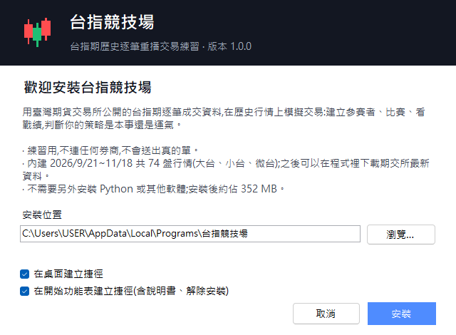
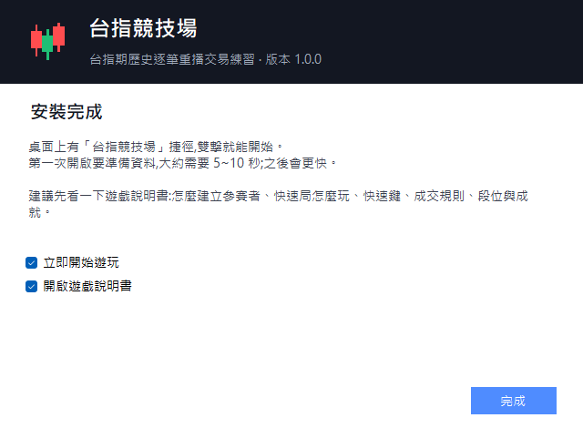
2-3 開啟遊戲
- 雙擊桌面的 台指競技場（或開始功能表 → 台指競技場）。
- 第一次開啟要準備資料，大約 5～10 秒；之後會更快。
- 遊戲在背景有一個小小的本機伺服器（只接受這台電腦自己連線）。關掉視窗後，它閒置 3 小時會自己結束，不必理它。
- 右上角的小圓點是行情狀態：綠色＝就緒，黃色閃爍＝正在處理資料，紅色＝出錯（請看第 14 章）。
2-4 畫面導覽
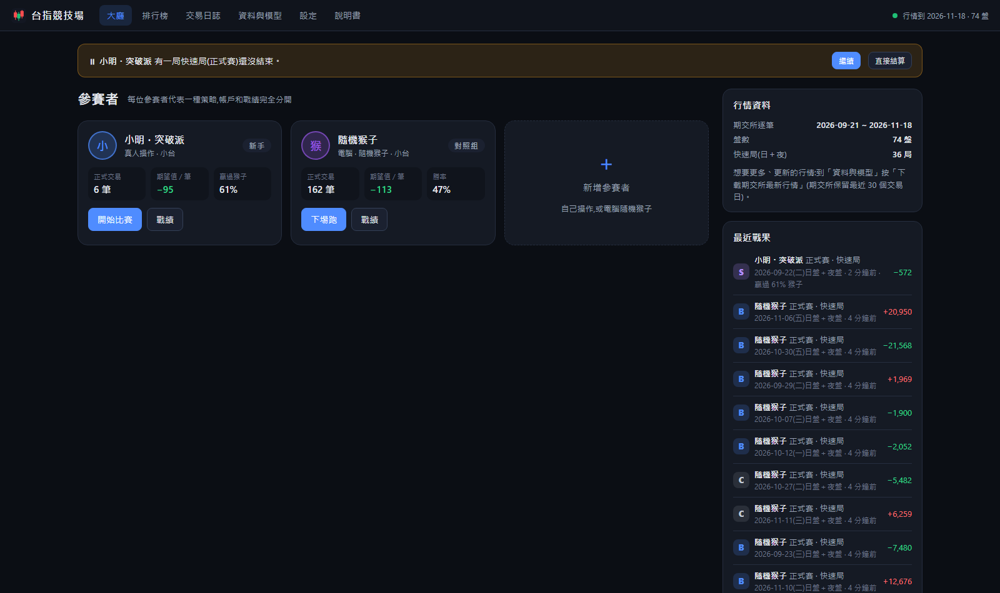
| 頂列 | 用途 |
|---|---|
| 大廳 | 所有參賽者、開始比賽、最近戰果、還沒結束的局 |
| 排行榜 | 所有參賽者並排比較（第 11 章） |
| 交易日誌 | 每一筆交易，可以篩選、看心得（第 11 章） |
| 資料與模型 | 行情目錄、成交模型說明、下載最新行情（第 12 章） |
| 設定 | 成交規則、比賽規則、保證金、音效（第 13 章） |
| 說明書 | 打開這份說明書 |
3五分鐘上手
- 大廳按 ＋ 新增參賽者：取個名字，類型選「自己操作」，商品先選「小台」，其他用預設值，按 儲存。
- 在參賽者頁按 開始比賽，選 快速局（5 分鐘走完一個日盤加夜盤）。
- 畫面中間出現說明時，按 空白鍵 開始。
- 覺得會漲按 B（市價買進），覺得會跌按 S（市價賣出）。預設會自動幫你掛停損 40 點、停利 80 點，K 線圖上會出現橘色停損線和藍色停利線。
- 想提早出場按 F（平倉）；想改方向按 R（反手）。
- 5 分鐘到就自動結算：看評分、和猴子比、教練講評，揭曉這一局是哪一天的行情。
4參賽者
每一位參賽者代表一種策略，帳戶、規則和戰績完全分開。建議一種想法建一位，例如「突破派」只做突破、「回檔派」只做回檔，累積一段時間後在排行榜上比較。
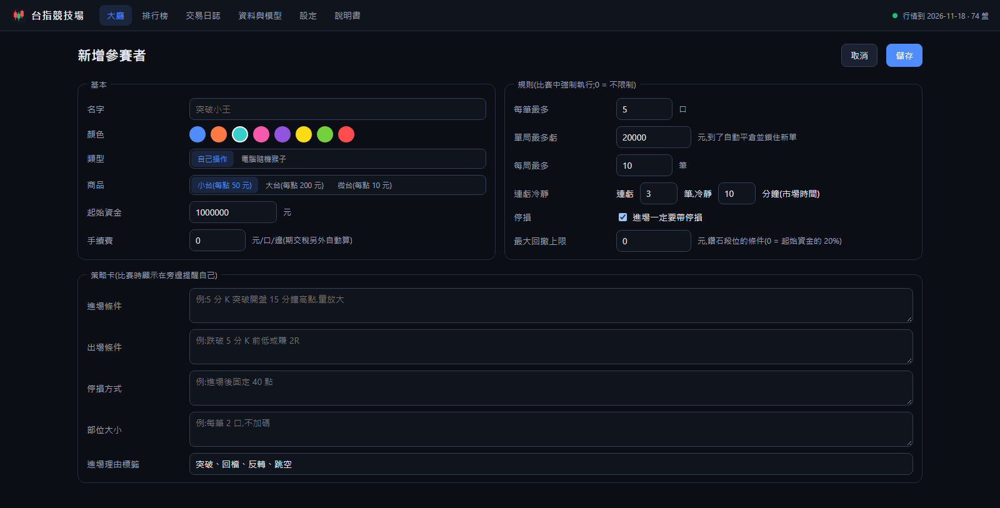
4-1 兩種參賽者
| 類型 | 說明 |
|---|---|
| 自己操作 | 你親自下單。有段位、成就、教練講評。 |
| 電腦隨機猴子 | 完全隨機的對照組：隨機時間、隨機多空進場，持有一段隨機時間就出場。按 下場跑 可以一次跑很多局（20 局約 10 秒）。你的策略至少要穩定贏過它，才算真的有東西。 |
4-2 基本設定
| 欄位 | 說明 |
|---|---|
| 名字、顏色 | 顯示在大廳與排行榜 |
| 商品 | 大台（每點 200 元）、小台（50 元）、微台（10 元）。三種走勢幾乎一樣，差在每點價值、買賣價差和保證金。 |
| 起始資金 | 預設 100 萬。保證金不夠就不能開新倉（第 7 章）。 |
| 手續費 | 每口每邊多少元，請填你實際的費率；期交稅會另外自動計算。 |
4-3 規則（比賽中強制執行）
| 規則 | 效果 |
|---|---|
| 每筆最多幾口 | 超過就擋下來 |
| 單局最多虧多少 | 這一局虧到上限（含未實現），自動平倉並鎖住新單，只能等結束 |
| 每局最多幾筆 | 到了就不能再開新倉 |
| 連虧冷靜 | 例如連虧 3 筆冷靜 10 分鐘（市場時間），期間不能開新倉 |
| 進場一定要帶停損 | 勾選後，「進場自動帶停損」不能關，沒停損的進場會被擋下 |
| 最大回撤上限 | 鑽石段位的條件之一（0＝起始資金的 20%） |
被規則擋下的次數會記錄下來，並扣單局評分。規則是用來練紀律的：想做到，就讓程式逼你做到。
4-4 策略卡與進場理由
- 策略卡：寫下進場條件、出場條件、停損方式、部位大小。比賽時會顯示在畫面右邊提醒你。
- 進場理由標籤：例如「突破、回檔、跳空、反轉」。下單前可以先選理由；結算時也能補選。累積之後，戰績頁會告訴你哪一種理由真的有賺。
4-5 隨機猴子的設定
每局交易幾筆、平均持有幾分鐘（有長有短）、每筆幾口、要不要掛固定點數的停損停利。
4-6 編輯、複製、封存
- 已經比賽過的參賽者，不能改「類型」和「商品」，以免戰績混在一起。想換的話用 複製，會建立一位設定相同的新參賽者。
- 封存：大廳和排行榜不再顯示，紀錄仍保留在資料庫。
5賽制
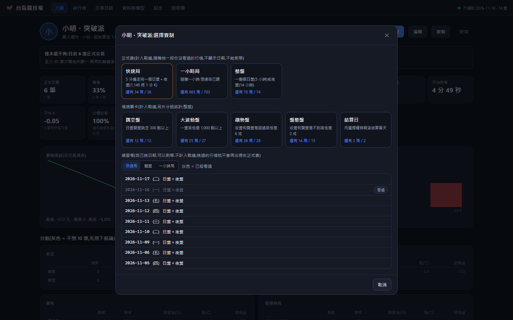
5-1 正式賽（計入戰績）
| 賽制 | 內容 | 適合 |
|---|---|---|
| 快速局 | 5 分鐘走完同一天的日盤（08:45–13:45）和夜盤（15:00–05:00），共 1,140 根 1 分 K，約 228 倍速。日盤收盤到夜盤開盤的休市自動跳過，部位可以留過休市。 | 大量練習看盤型、累積樣本 |
| 一小時局 | 隨機抽一小時：日盤分 5 段、夜盤分 14 段。看得到這一段之前的行情。倍速自己調，可以開智慧快轉。 | 仔細練進出場 |
| 整盤 | 一整個日盤（5 小時）或夜盤（14 小時） | 練整天的節奏 |
5-2 情境關卡（計入戰績，另外分組統計）
| 關卡 | 定義（用大台主力月份判定） |
|---|---|
| 跳空盤 | 日盤開盤和前一盤收盤差 300 點以上 |
| 大波動盤 | 一盤最高最低差 1,000 點以上 |
| 趨勢盤 | 收盤和開盤的差，超過最高最低差的 6 成 |
| 盤整盤 | 收盤和開盤的差，不到最高最低差的 2 成 |
| 結算日 | 月選擇權與期貨結算當天（每月第三個星期三） |
5-3 練習場（不計入戰績）
自己挑日期，可以 倒帶 5 分鐘，暫停時也能下單，適合研究特定的一天。注意：練習場挑過的行情就算「看過」，之後不會再出現在正式賽。
5-4 公平規則
- 只抽沒看過的行情：所有「自己操作」的參賽者其實都是你，所以一段行情只要被任何一位真人參賽者看過，正式賽就不會再抽到。開局的那一刻就算看過，不能重抽。
- 盲測：不顯示日期，月份也只顯示「近月」；結算時才揭曉。
- 不能倒帶，暫停時不能下單：真實市場不會等你想。暫停可以看圖、喝口水，但要繼續才能下單。
- 中途離開：關掉視窗或回大廳，這一局會保留。之後在大廳按「繼續」接著玩，或「直接結算」用存檔的時間點平倉結算。輸的局不能刪。
5-5 內建的局數
內建 2026/9/21～11/18 共 74 盤，可以玩快速局 36 局、一小時局 703 局、整盤 74 盤。用完之後可以下載期交所最新行情（第 12 章），或到「設定」關掉「只用沒看過的行情」（成績可能受記憶影響）。
6比賽畫面與下單
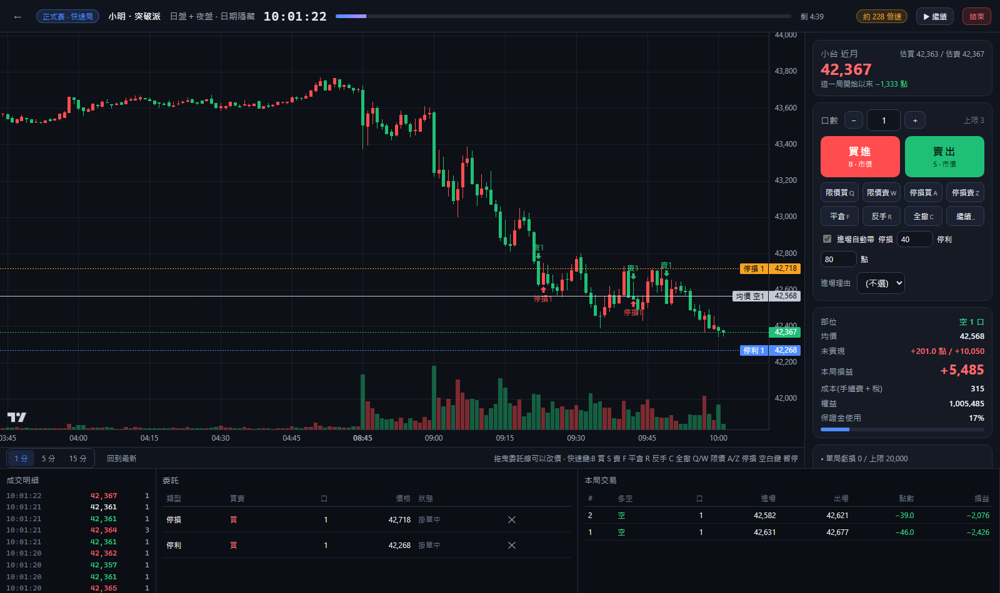
| 區域 | 內容 |
|---|---|
| 頂列 | 賽制、參賽者、時鐘、進度條、剩餘時間、倍速、智慧快轉、開始／暫停、結束 |
| K 線圖 | 1／5／15 分 K 與成交量（紅漲綠跌）。開局前的行情（前一盤）也會畫出來當背景。可以滾輪縮放、拖曳平移，「回到最新」跳回現在。 |
| 行情 | 最新成交價、估計的買價／賣價、這一局開始以來漲跌 |
| 下單區 | 口數、市價買進／賣出、限價、停損、平倉、反手、全撤、進場自動帶停損停利、進場理由 |
| 部位 | 多空與口數、均價、未實現（點／元）、本局損益、成本、權益、保證金使用率 |
| 規則 | 單局虧損、筆數、冷靜時間等目前狀態（快違規時變黃色） |
| 成交明細 | 最近 40 筆成交；口數多的大單會標成黃色 |
| 委託／本局交易 | 還掛著的單（可以按 ✕ 取消）、這一局已經結束的每一筆 |
6-1 時間控制
- 倍速：1×、2×、5×、10×、30×、60×（快速局固定約 228 倍，不能調）。
- 智慧快轉：沒有部位、行情又安靜時，自動加速到 30×；價格開始快速變動，或你的委託快被碰到時，自動放慢回你設的倍速。它只看已經發生的行情，不會偷看未來。
- 倍速和反應：倍速越快，你的一秒鐘在市場裡就越長。做很短線的話，建議用 1～2 倍速，成績才不會被低估。
- 自動暫停：遊戲視窗切到背景時會自動暫停。
6-2 下單方式
| 動作 | 怎麼做 | 說明 |
|---|---|---|
| 市價買進／賣出 | B／S 或大按鈕 | 用當下估計的賣價／買價成交 |
| 限價買／賣 | Q／W，再點圖上的價位 | 掛在你點的價格；價格要「穿過」才成交 |
| 停損買／賣（觸價） | A／Z，再點圖上的價位 | 價格碰到觸發價後送出市價單。停損買要掛在現價之上，停損賣掛在現價之下。 |
| 進場自動帶停損停利 | 勾選，填點數 | 每次進場（含加碼）自動在均價上下掛停損與停利；其中一張成交，另一張自動取消 |
| 平倉 | F | 取消所有委託，市價平掉全部部位 |
| 反手 | R | 一張市價單平掉原部位並反向開同樣口數 |
| 全部撤單 | C | 取消所有委託（含停損停利） |
| 改價 | 在圖上拖曳委託線 | 放開滑鼠就改價 |
| 取消一張單 | 委託表右邊的 ✕ |
開盤集合競價：比賽從開盤開始時（快速局、整盤、開盤那一段的一小時局），按「開始」之前就可以先下單，這些單會參加開盤集合競價，用開盤價成交。夜盤開盤前（快速局的休市期間）送出的單也一樣。練跳空盤時很有用。
6-3 快速鍵
| 按鍵 | 功能 | 按鍵 | 功能 |
|---|---|---|---|
| 空白鍵 | 開始／暫停 | Q W | 限價買／賣（再點圖選價位） |
| B S | 市價買進／賣出 | A Z | 停損買／賣（再點圖選價位） |
| F | 平倉 | Esc | 取消選價位 |
| R | 反手 | 1 2 3 | 1／5／15 分 K |
| C | 全部撤單 | ＋ − | 口數加減 |
| ↑ ↓ | 倍速加快／放慢 |
7成交與成本規則（怎麼做到「最真實」）
7-1 為什麼市價單不能用最後成交價成交
期貨永遠有買價和賣價，兩者的差叫「價差」。你按市價買進，是買在賣價；按市價賣出，是賣在買價。實測台指期平常的價差：大台約 5～6 點、小台約 3～4 點，結算前後還會放大。如果練習程式讓你用最後成交價成交，每來回一趟就會比真實好大約一個價差，練出來的成績會太漂亮。
7-2 怎麼估買價與賣價
期交所的逐筆資料只有成交價，沒有買賣價，所以程式用「最後一筆往哪邊跳」來估：
- 最後一筆往上跳：代表那筆是買方主動、成交在賣價。所以賣價 ≈ 最後成交價，買價 ≈ 最後成交價 − 典型價差。
- 最後一筆往下跳：反過來。買價 ≈ 最後成交價，賣價 ≈ 最後成交價 ＋ 典型價差。
典型價差是用群益錄到的真實買賣價校準的（大台日盤 5、夜盤 6；小台日盤 4、夜盤 3；結算前一天和結算日的近月會放大）。拿真實買賣價驗證的結果：
| 市價單成交價的算法 | 大台平均偏差 | 小台平均偏差 |
|---|---|---|
| 直接用最後成交價 | 每次便宜 2.4～3.4 點（太樂觀） | 便宜 1.4～2.0 點 |
| 依最後一跳方向 ± 典型價差（採用） | −0.6～＋0.8 點 | −0.2～＋0.2 點 |
長期統計幾乎不偏；單筆仍可能差 2～4 點（大台）、1～2 點（小台）。微台沒有買賣價紀錄，先借用小台的價差。
7-3 各種委託怎麼成交
| 項目 | 規則 |
|---|---|
| 下單延遲 | 從按下到交易所收到，預設 0.2 秒（市場時間） |
| 市價單 | 買在估計的賣價、賣在估計的買價 |
| 一次下多口 | 最佳一檔通常只有 1～2 口，超過的部分每多一檔差 1 點（可以在設定改） |
| 限價單 | 價格「穿過」你的價位才算成交，成交在你的限價。因為不知道你排在第幾個，這是保守的算法；結算時會另外算「碰到就成交」的結果給你參考。掛的價格如果已經比市價好，會立刻用市價成交（不會超過你的限價）。 |
| 停損單（觸價） | 成交價碰到觸發價後，送出市價單（再經過延遲）。行情急的時候，成交價會比觸發價差，這是真的會發生的滑價。 |
| 集合競價 | 開盤前或休市時送出的單、掛著的限價單，能成交的都用開盤那一筆的價格成交 |
| 時間 | 期交所的時間只到秒，同一秒的多筆成交平均分散在那一秒裡 |
7-4 成本
每口每邊都要付：手續費（參賽者設定）＋ 期交稅（成交價 × 每點價值 × 十萬分之二，四捨五入到元）。指數 40,000 點時，期交稅每邊：大台約 160 元、小台約 40 元、微台約 8 元。
例：小台 48,867 買進、48,829 停損，手續費每邊 20 元：價差損失 38 點 × 50 = 1,900 元，手續費 40 元，期交稅 49＋49 元，合計 −2,038 元。
7-5 保證金、追繳與強制平倉
- 開新倉時，權益要 ≥ 原始保證金 × 口數，否則會被拒絕（預設照期交所公告：大台 701,000、小台 175,250、微台 35,050，可以在設定改）。
- 權益低於維持保證金：畫面提醒「追繳」。
- 權益低於原始保證金的 25%：強制平倉。
7-6 換月
每一盤用當盤成交量最大的月份（結算週會自動換到下個月）；快速局整局用同一個月份，所以部位可以留過休市。
7-7 做不到的地方（誠實說明）
- 你的單不會影響行情：大量下單時，真實情況會更差。
- 限價單排隊的位置不知道：用「穿過才成交」保守估計。
- 買賣價是估計值：長期不偏，但單筆會有誤差。
- 心理壓力和真錢不同。
8結算畫面
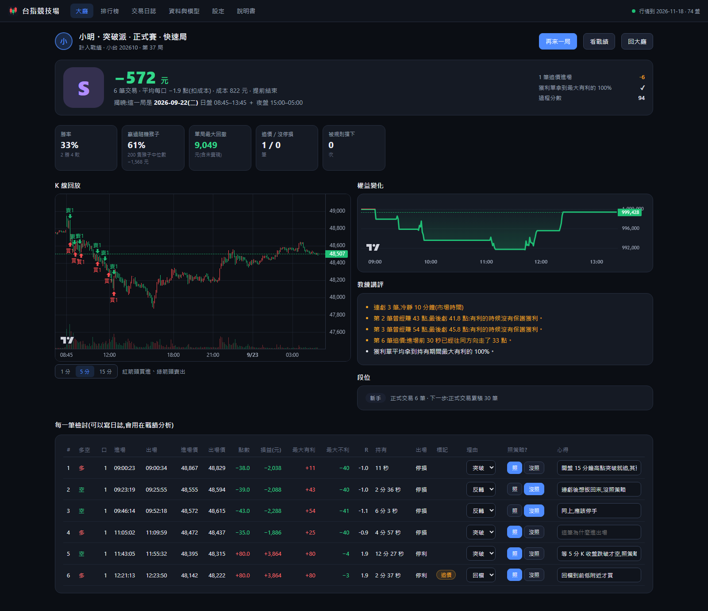
8-1 單局評分只看「過程」
單局賺錢可能只是運氣，所以評分（S／A／B／C／D）只看你有沒有照紀律做，不看賺賠。滿分 100：
| 扣分項目 | 扣分 |
|---|---|
| 想違反規則（被擋下） | 每次 −8，最多 −40 |
| 沒有停損的交易（規則沒有強制停損時） | 每筆 −10，最多 −30 |
| 追價進場（進場前 30 秒內已經往同方向走 30 點以上） | 每筆 −6，最多 −30 |
| 被強制平倉（虧損上限或保證金不足） | −15 |
| 獲利單平均只拿到最大有利的 3 成以下 | −10 |
90 分以上 S、80 以上 A、65 以上 B、50 以上 C，其他 D；整局沒有交易記為「觀望」。所以會出現「賠錢但 S」（照紀律停損）或「賺錢但 D」（亂追價、沒停損但運氣好）。
8-2 和隨機猴子比
200 隻猴子在同一段行情裡，做和你一樣多筆、持有時間一樣、口數一樣、多空比例一樣的交易，只是進場時間隨機，成本也照扣。「贏過 61% 的猴子」表示你的這一局比 61% 的猴子好。
8-3 限價單「碰到就成交」的對照
如果這一局用過限價單，會另外顯示「如果限價單碰到就成交（其他操作不變）」的損益。實際成績和它的差，就是排隊位置不確定造成的範圍。
8-4 K 線回放與權益變化
整局（含之後的行情）的 K 線和你的每一筆成交，可以切換 1／5／15 分 K；權益曲線顯示這一局中帳戶的起伏。
8-5 教練講評
自動找出這一局最值得注意的地方，例如「第 2 筆曾經賺 43 點，最後虧 41.8 點：有利的時候沒有保護獲利」、「連虧 3 筆，冷靜 10 分鐘」。
8-6 每一筆檢討與日誌
每一筆列出進出場時間與價格、點數、損益、最大有利（持有期間最多曾經賺幾點）、最大不利（最多曾經賠幾點）、R 倍數、持有時間、出場方式（停損／停利／手動）與標記（追價、無停損）。右邊可以補選 理由、按 照／沒照 策略、寫 心得，會用在戰績分析。
9戰績分析
在大廳點參賽者卡片（或「戰績」）。只算正式賽和情境關卡，練習場不算。
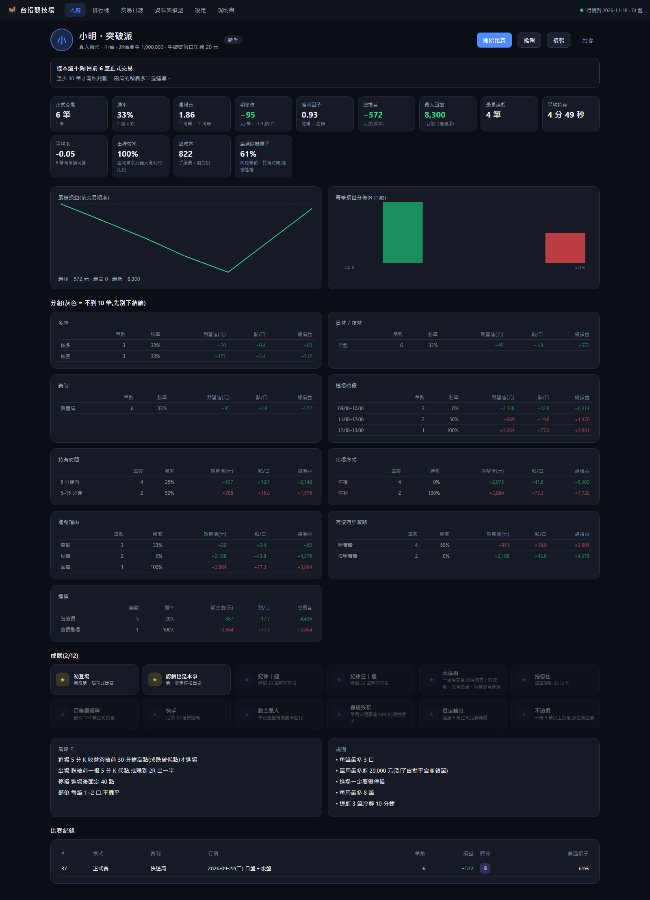
9-1 指標的意思
| 指標 | 意思 |
|---|---|
| 勝率 | 賺錢的筆數 ÷ 全部筆數（扣完成本） |
| 風報比 | 平均每筆賺的 ÷ 平均每筆賠的 |
| 期望值 | 平均每筆賺多少元（以及每口幾點）。最重要的一個數字：大於 0 才是賺錢的策略。 |
| 獲利因子 | 總賺 ÷ 總賠，大於 1 才是賺 |
| 總損益 | 全部加總（扣成本） |
| 最大回撤 | 依出場順序累積損益，從最高點往下最多掉多少 |
| 最長連虧 | 最多連續賠幾筆 |
| 平均 R | 把進場時的停損距離當 1R，平均每筆賺賠幾個 R（有停損的交易才算得出來） |
| 出場效率 | 獲利單實際拿到的點數 ÷ 持有期間最多曾經賺到的點數 |
| 贏過隨機猴子 | 每一局各抽一隻猴子加總、重複 2,000 次，你的總損益贏過幾成 |
9-2 這個策略到底有沒有用
- 樣本不到 30 筆：先別下結論，一兩局的輸贏多半是運氣。
- 期望值的 95% 區間：用重新抽樣估計「期望值可能落在哪裡」。整個區間都大於 0，而且贏過 95% 的猴子，才顯示「有統計上的優勢」。
- 還要幾筆：照目前的平均與波動，估算還要累積多少筆才判斷得出來。
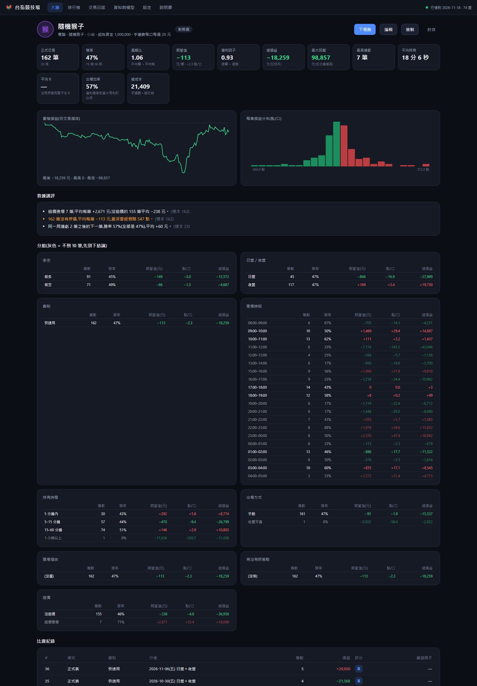
9-3 分組
同樣的指標依多空、日盤／夜盤、賽制、進場時段、持有時間、出場方式、進場理由、有沒有照策略、情境關卡、追價分開看，找出你在哪裡賺、在哪裡賠。灰色＝不到 10 筆，數字很容易是巧合，先別當真。
9-4 教練講評（累積）
樣本夠時會自動提醒，例如：虧損單抱得比獲利單久（抱虧砍賺）、獲利單出場太早、追價進場的平均成績、沒停損的交易最深曾經倒賠多少、連虧之後的下一筆表現、做多和做空的差別、照策略與沒照策略的差別。每一條都附樣本數。
10段位與成就
10-1 段位：看的是統計上的把握，不是運氣
| 段位 | 條件（正式賽＋情境關卡） |
|---|---|
| 新手 | 正式交易不到 30 筆 |
| 青銅 | 30 筆以上 |
| 白銀 | 30 筆以上，期望值（扣成本）大於 0 |
| 黃金 | 50 筆以上，期望值大於 0，贏過 80% 的隨機猴子 |
| 白金 | 100 筆以上，期望值大於 0，贏過 95% 的隨機猴子 |
| 鑽石 | 200 筆以上，期望值大於 0，贏過 99% 的隨機猴子，而且最大回撤在你設的上限內 |
10-2 成就
| 成就 | 條件 | 成就 | 條件 |
|---|---|---|---|
| 初登場 | 完成第一局正式比賽 | 百筆里程碑 | 累積 100 筆正式交易 |
| 認錯也是本事 | 第一次用停損出場 | 快手 | 完成 10 場快速局 |
| 紀律十連 | 連續 10 筆都有停損 | 跳空獵人 | 在跳空盤情境關卡獲利 |
| 紀律三十連 | 連續 30 筆都有停損 | 贏過猴群 | 單局成績贏過 90% 的隨機猴子 |
| 零違規 | 一局有交易，沒有被擋下、沒有追價、每筆都有停損 | 穩定輸出 | 連續 5 局正式比賽賺錢 |
| 抱得住 | 單筆賺到 2R 以上 | 不追價 | 一局 5 筆以上交易，都沒有追價 |
11排行榜與交易日誌
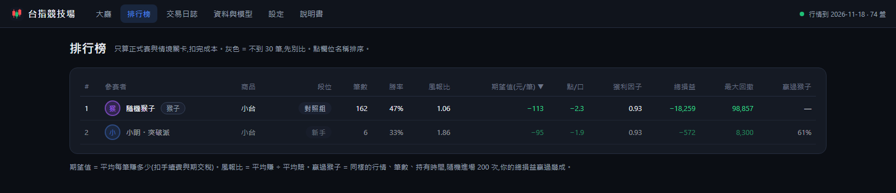
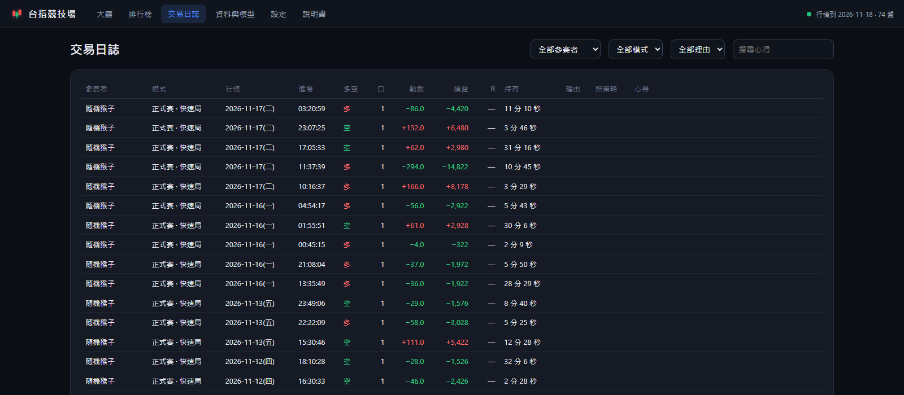
12行情資料與更新
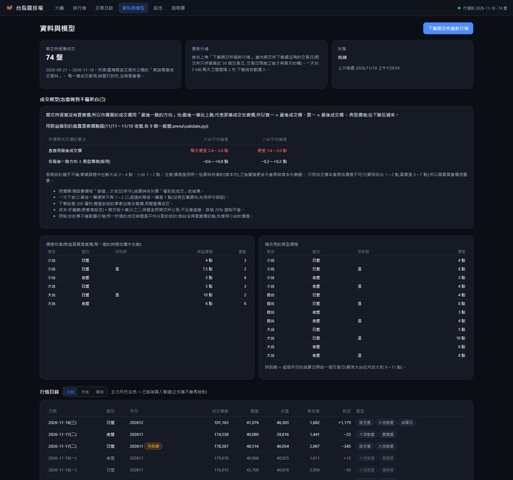
- 內建行情：2026/9/21～11/18 共 74 盤（37 個交易日的夜盤＋日盤），大台、小台、微台都有，每一筆成交都在。
- 下載最新行情：到「資料與模型」按右上角 下載期交所最新行情，程式會向臺灣期貨交易所網站下載還沒有的交易日，並自動匯入。
- 期交所只保留最近 30 個交易日，交易日傍晚之後才有當天的檔。
- 一天約 5 MB，每天之間間隔 2 秒；下載完會自動刪掉原始檔，只留整理過的行情。
- 建議每隔幾週下載一次，太久沒下載的日子會超過 30 天就拿不到了。
- 行情目錄：灰色的盤＝已經被看過（正式賽不會再抽到）。
13設定
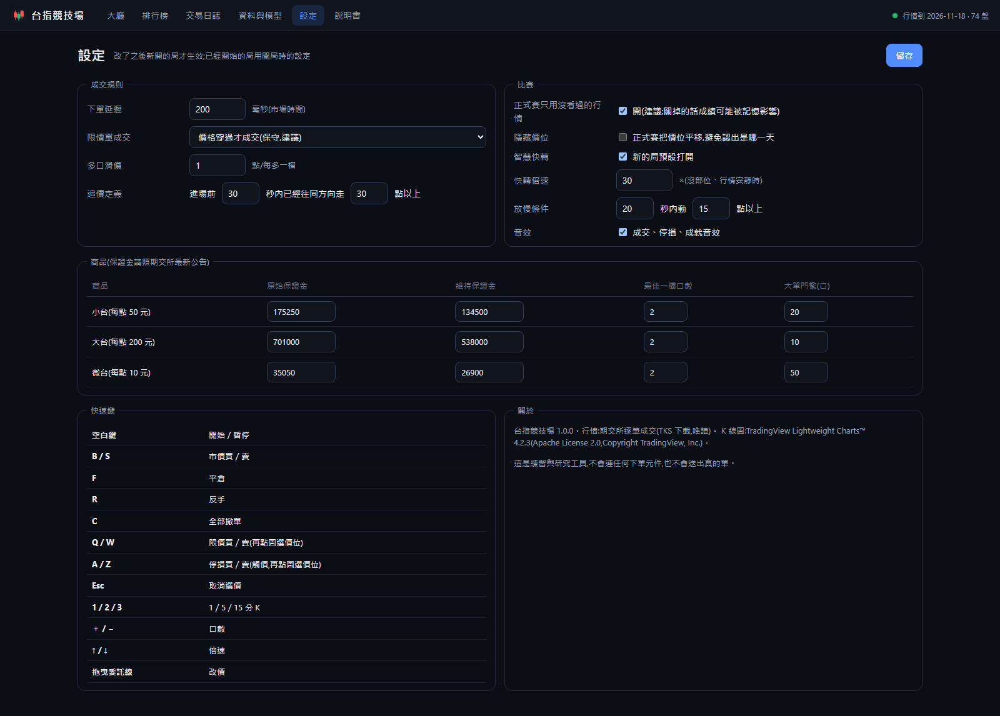
| 設定 | 說明 |
|---|---|
| 下單延遲 | 從下單到交易所收到的時間（市場時間），預設 200 毫秒 |
| 限價單成交 | 價格穿過才成交（保守，建議）／碰到就成交（樂觀） |
| 多口滑價 | 超過最佳一檔的口數，每多一檔差幾點 |
| 追價定義 | 進場前幾秒內已經往同方向走幾點，就算追價（影響評分與統計） |
| 只用沒看過的行情 | 建議開著；關掉之後正式賽可能抽到看過的行情 |
| 隱藏價位 | 正式賽把價位整體平移，避免從價位認出是哪一天（損益不受影響） |
| 智慧快轉 | 新的局是否預設打開、快轉倍速、什麼情況放慢 |
| 音效 | 成交、停損、停利、成就的音效 |
| 商品 | 原始／維持保證金（請照期交所最新公告）、最佳一檔口數、大單門檻 |
14常見問題
安裝時出現「Windows 已保護您的電腦」
按 其他資訊 → 仍要執行。這個安裝檔沒有購買商業的程式碼簽章，所以 Windows SmartScreen 不認得它。如果防毒軟體擋下，可以選擇允許，或請提供程式的人確認安裝檔是原始檔案。
雙擊捷徑之後沒有反應，或出現「沒有回應」
第一次開啟要準備資料，請等 10 秒左右再試一次。如果一直不行，把 安裝位置\data\logs\server.log 傳給提供程式的人。
正式賽說「沒看過的行情用完了」
到「資料與模型」下載期交所最新行情；或用練習場；或到設定關掉「只用沒看過的行情」。
為什麼我的市價單成交價比最後成交價差？
因為真實市場有買賣價差，市價買是買在賣價。這正是這個程式要讓你感受到的成本（第 7 章）。
為什麼賠錢的局拿 S，賺錢的局拿 D？
單局評分只看過程（第 8 章）。長期的賺賠請看戰績頁和段位。
比賽到一半不小心關掉了
重新打開，大廳最上面會有「還沒結束」的提示列，按 繼續 接著玩（部位和委託都會還原），或 直接結算。
程式會不會連網路、傳資料出去？
不會。程式只在這台電腦上運作，只接受本機連線。唯一會連網路的時候，是你按「下載期交所最新行情」，而且只連到臺灣期貨交易所網站下載公開資料。
想全部重新開始
最簡單的方法是把參賽者封存，再建新的。要完全清空：解除安裝，被問到「要一併刪除你的參賽者、比賽紀錄與設定嗎？」時選「是」，再重新安裝。
可以把戰績搬到另一台電腦嗎？
先關掉遊戲視窗，把 安裝位置\data 裡的 arena.db（連同同名的 arena.db-wal、arena.db-shm，如果有的話）複製到另一台電腦同樣的位置；或直接用 data\backups 裡每天自動備份的檔案，改名成 arena.db。
15資料、備份與解除安裝
位置（預設安裝位置為 %LOCALAPPDATA%\Programs\台指競技場） | 內容 |
|---|---|
data\arena.db | 你的參賽者、每一局、每一筆交易、成就、設定 |
data\backups\ | 每天第一次開啟時自動備份 arena.db，保留 30 份 |
data\sessions\ | 整理過的行情檔 |
data\logs\server.log | 程式紀錄（出問題時有用） |
runtime\ | 程式用的 Python 執行環境（不影響電腦上其他的 Python） |
解除安裝：開始功能表 → 台指競技場 → 解除安裝台指競技場（或 Windows 設定 → 應用程式 → 台指競技場）。會先問你要不要一併刪除戰績：選「否」會保留 data 資料夾，之後重新安裝到同一個位置可以接著用。
16免責聲明與授權
- 本程式是交易練習與研究工具，不連接任何期貨商、不會送出真實委託；所有內容僅供學習參考，不構成任何投資建議。過去的行情與模擬成績不代表未來的實際交易結果。
- 行情資料來源：臺灣期貨交易所公開的「期貨每筆成交資料」，經本程式轉換格式，僅供個人練習研究使用。
- K 線圖使用 TradingView Lightweight Charts™ 4.2.3（Apache License 2.0，Copyright © TradingView, Inc.）。
- 內含 Python 3.12 執行環境（Python Software Foundation License）。授權全文在安裝位置的
licenses資料夾。